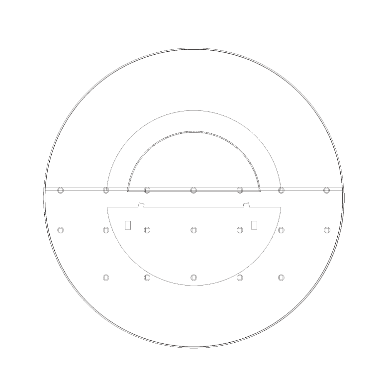
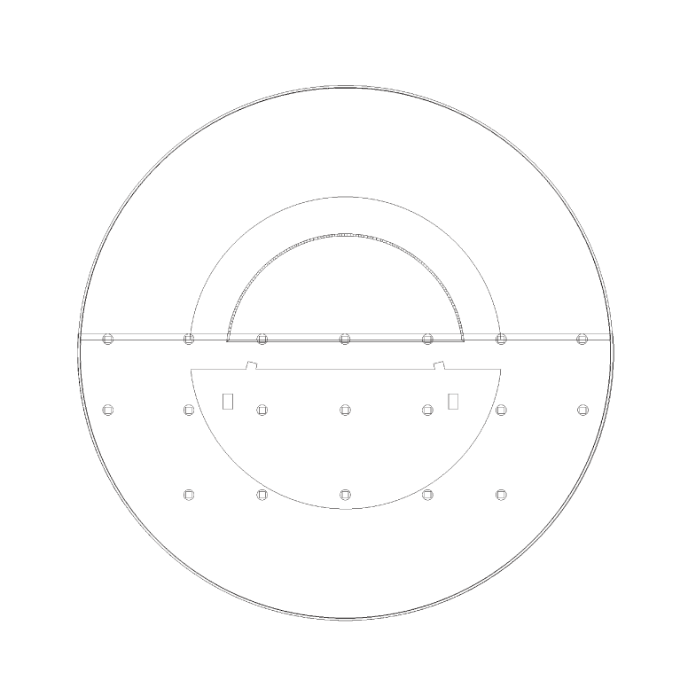

神戸芸術工科大学 芸術工学部
プロダクト・インテリアデザイン学科 3年 小谷久美
飲食店の前を通った時、自分の家に帰った時、ベランダに出た時、暖かくて美味しそうな匂いを嗅いだことがあると思います。私は学生マンションでベランダに出た瞬間、美味しそうな匂いが隣からうつってきて「ぐ〜」とお腹が鳴り、空いたことがあります。そんな経験はありませんか？
面識のない隣人とまるで匂いを通じて会話をしている気分になり、こういうコミュニケーションの取り方も面白いと感じました。
今作品は食事生活がままならない学生が食事を通してコミュニケーション力が養える神戸芸術工科大学の学生寮を考えました。
人間の嗅覚は鋭いものであり、生活の中で欠かせません。そこに着目し、一人暮らしの学生の生活リズムが作られないかと考えました。
不規則な時間に食べる学生をターゲットにし、ご飯のいい匂いで食欲がそそられるよう食堂を入り口の手前に配置しました。食堂をメインに考え、香りが広がるよう円型にし一階はドアを設けないことで二階、三階に香りが届きます。その香りで学生達が食堂に集まり、学生同士で会話が生まれコミュニケーション力が養われる仕組みになります。
一階は公共、二階は各学生の部屋、三階は屋上広場になり、ゆったりとした空間になります。


左から一階、二階、三階の平面図になります。一階は食堂以外にトイレ・大浴場・当校の各学科自習室を設けています。二階は各学生の部屋があり、ランドリールームを完備しています。全体的に白を基調とし、まっさらなキャンパスに見立て学生の自由な発想を促すようにしています。
食堂は学生同士で集まりにぎやかなイメージがありますので色を使用し表現しています。

 
